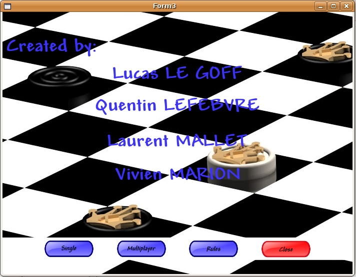
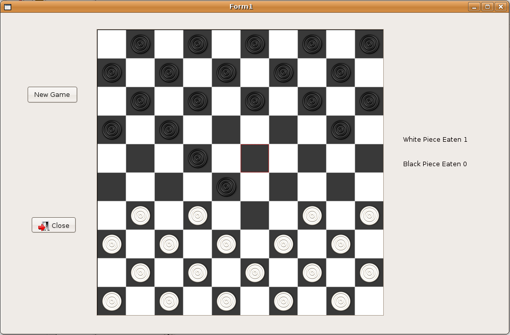
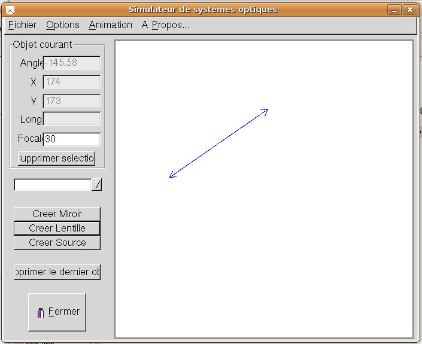
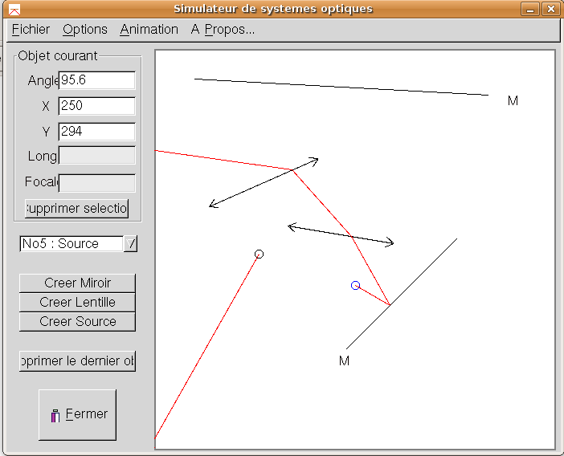
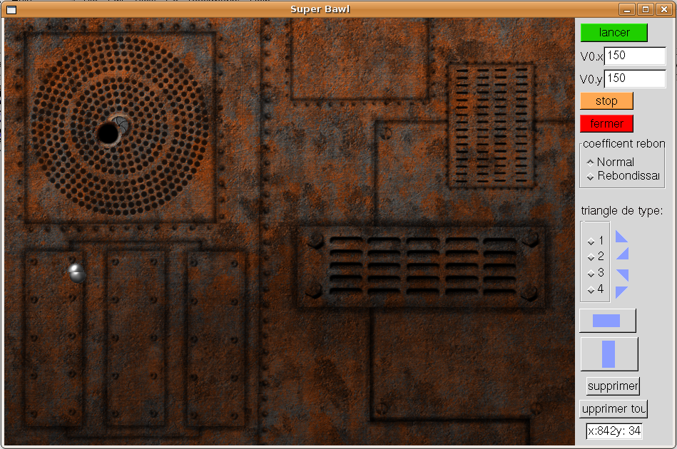
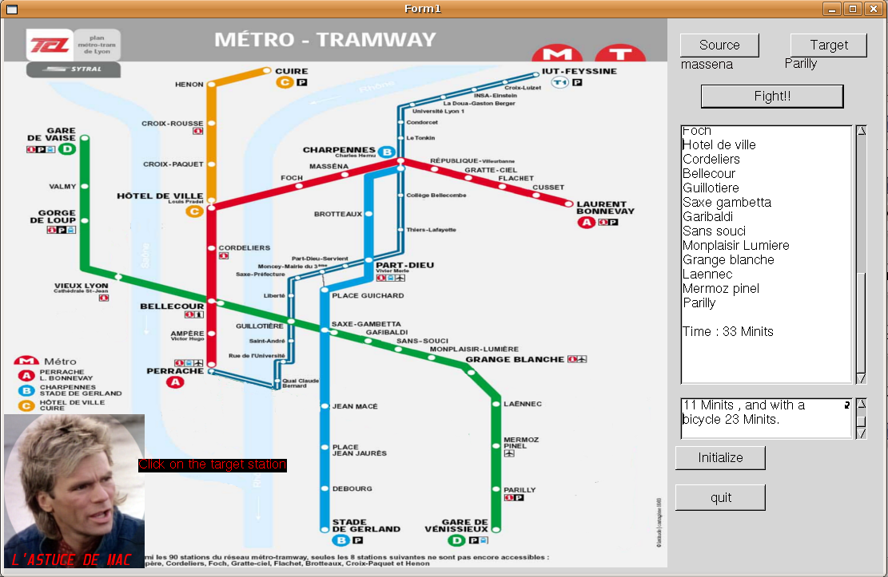

Examples for computer science miniprojects
2007/2008
Other years/groups
The game of draughts (Lucas LE GOFF, Quentin LEFEBVRE, Laurent MALLET, Vivien MARION)
A draughts game with AI (artificial intelligence) component:


Optical components (GUILLOT Emmanuel, HASNAOUI Meryem, KALAM-ALAMI Marwane, PONTAL Audrey)
Optical components are placed interactively with the mouse:

The light sources can be animated:

Superbawl (Benoit-Joseph PASCAL, Jeremy LE BERRE, Loic LOISEL, Jean-Francois KASSEM)
Trajectories of a ball. Obstacles can be set interactively.

Path planning (Mery Maxime,Pauchard Emmanuel,Voegely Edouard,Cuenod Helene)
Planning the shortest path in the TCL network. Source and destination can be picked interactively with the mouse.
